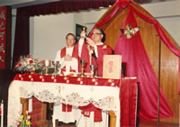
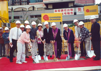
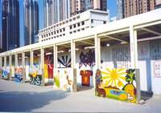
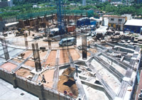
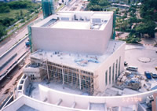

| 堂區歷史 |
領羊歸棧一聖安德肋堂區的發展故事 羊群遷徙到那裡，牧羊人自然跑到那裡照顧祂的羊群。將軍澳聖安德肋堂的發展歷史，就是一個準備羊棧，領羊歸棧的故事；由無到有，歷時十八載，期間一波三折，幾乎連建堂的土地也保不住。
(1) 尋羊記
今日聖安德肋堂位處的將軍澳人煙稠密，但這個十三世紀已有人聚居的地方，最初只是一條小漁村。到上世紀六十年代，則成為一個以拆卸舊船為主的船塢區。1982年，政府開始填海發展將軍澳，人口才快速增長起來。
隨著政府決定把將軍澳發展為數十萬人的市鎮，調景嶺平房區又遷拆在即，教區於1988年起籌備在將軍澳建立新堂區，服務從調景嶺及其他地區遷來的教友，並向未受主恩的居民傳播福音。
當時，區內最早的公屋和居屋，包括康盛花園、翠林?及寶琳?已相繼落成，但區內連彌撒中心也沒有，坑口聖雲仙堂又位處偏僻半山。不少已遷入將軍澳的教友，寧願返回原屬的堂區參與感恩祭。
新堂區建設需時，總不能任由將軍澳的教友如散沙一盤。因此，教區委託負責調景嶺聖母升天堂的聖母聖心會，同時牧養將軍澳的教友。
於是，聖母聖心傳教修會的周懷德修女在1989年率先獲派遣到將軍澳，尋找散落於區內各處的羊群。
坑口聖雲仙堂太過偏僻？周修女索性管接管送；每逢主日，她租下一輛旅遊車，四出接載將軍澳各屋苑的教友，到聖雲仙堂參與感恩祭，培養他們對將軍澳教會團體的歸屬感。
最初上車的只有寥寥十多人，但周修女沒有因為人數的多寡需氣餒。我們的堂區就是在這十多人的基礎上發展起來；基督的教會最初不也只是由十二宗徒開始的嗎？
|
周懷德修女 (1932 -2001) |
(2)
暫借的羊棧
到1990年，聖母聖心會在景林?開辦了景林天主教小學，便借用了小學禮堂充當彌撒中心。彌撒中心第一台感恩祭於同年12月2日，即將臨期第一主日舉行。當時的牧職人員除聖母聖心會馬偉良神父外，還有周修女，需教友大約只得六十人；他們可說是堂區的最早成員。 命名的來由 彌撒中心最初隸屬於坑口聖雲仙堂區，連名字也沒有，直至1992年經教友投票，獲命名為聖安德肋彌撒中心。教友第一次投票時，希望有一個本地化的名字，於是取「明德」為名；但教區的政策是希望以聖人命名。於是，教友第二次投票，改選以聖安德肋宗徒命名及作為主保。 這個選擇是基於聖安德肋宗徒的紀念日，剛好是彌撒中心舉行首祭的前兩天，而在十二宗徒中，只有他既為人熟悉，又未獲香港其他聖堂或彌撒中心選為主保。 1992年年底，已故胡振中樞機親自祝聖彌撒中心為聖安德肋準堂區，不再隸屬坑口聖雲仙堂區。臨時堂區議會亦同日宣誓成為正式的堂區議會。1993年11月14日，準堂區正式升格成為聖安德肋堂區(St. Andrew's Parish)，繼續由聖母聖心會管理，並由該會的馬神父擔任本堂首主任司鐸。 該會的馬神父擔任本堂首任主任司鐸。直至1999年11月，聖母聖心會基於人手問題，才把堂區交回教區管理。有了名字、有了堂區的地位，如缺了熱心參與的教友，堂區只會是個空洞的稱號。但是，要在一個暫借的地方好好牧養主內的羊群，並非一蹴即就。 由三十人到五干人 參與彌撒中心第一台感恩祭的熱情過後，主日出席感恩祭的教友只得三十多人，但牧職人員未有洩氣。牧職人員除了四處探訪教友，還邀請他們到堂區幫忙大小事務，並請他們帶同朋友協助。即使堂區未正式成立，馬神父已找來幾位教友組成臨時堂區議會籌劃堂區的工作。這樣，牧者先找到領頭羊，羊兒一隻跟隨另一隻，踏進他們有份建立的家，成就了聖安德肋堂的發展。 隨著厚德?及頌明苑等屋苑相繼落成，將軍澳的教友增加了不少。小學禮堂中的新面孔愈來愈多，空位則愈來愈少。主日只得一台感恩祭實在不足應付。1999年年初，除了周六的提前感恩祭外，主日感恩已增至三台。 堂區成立之初，馬神父、周修女及傳道員李燕屏女士的帶領下，先後組成六個善會和四個信仰小團體，即(基基團)。顧厚德神父接任主任司鐸後，致力於禮儀方面的培訓，並定期舉辦堂區週年大會。此外堂區亦先後於2000年和2002年有了堂區標誌及堂歌。到2003年施永泰神父接任，積極團結各方教友，更多善會和基基團相繼成立。 這十多年來，景林天主教小學的校長、老師和職員對堂區鼎力相助，提供場地之餘，又負擔額外的清潔和準備器材的工作。到2005年底，登記的教友已增至1400多戶共5000多人，小學禮堂實在不敷應用，興建新聖堂已是刻不容緩的事。
|
1992年11月29日，胡振中樞機主持感恩祭，為慶祝聖安德肋準堂區成立。
|
(3)
興建我們的上主庭院
教區早於1988年開始跟政府部門商討買地建堂一事。政府最初打算把魷魚灣村消防宿舍旁邊的土地賣給教區，但該處交通不便，不為教區接受。 後來，政府建議出售安寧花園附近的土地(即常寧路新聖堂現址)予教區，豈料中途又出現變數。 政府賣地突然變卦 「忽然收到政府來信，指這個批地計劃多數不能成事，要另找一塊土地，但又沒有說明原因……聽說可能因為那塊土地鄰近地鐵站，改賣作建屋用途的話，政府可以多賺不少。」馬神父說，教區前後已花了不少時間買地，並已按那塊土地的位置等做準備，一旦政府決定不賣，建堂計劃就要從頭再來。 為了盡速建堂，馬神父再次與政府磋商。到1998年，政府終於按照原定計劃，將位於坑口地鐵站附近，約三千平方米的土地賣給教區，興建可容納七百人的新聖堂。 前後歷時十年的買地問題得到解決，但不表示建堂的計劃就此一帆風順。天主給了我們堂區另一個新考驗，就是新聖堂的設計。 擄馬神父說，由於早已預計聖堂在香港回歸後落成，因此，教友希望興建一所富中國特色的上主庭院。接任主任司鐸的顧神父亦說，由教區代表和堂區代表組成的建築委員會初步投票選出的兩個設計之一，就是一所中式庭園的設計，但最後教區卻選用了第三個設計，興建現在的新聖堂。
|




|
(4)
羊棧落成
聖堂的圖則多次修改及建築師的轉換，延誤了工程。堂區教友曾向教區反映，期望能盡快展開興建聖堂的工程。2001年3月10日，新聖堂終於舉行動土禮。 2004年7月，新聖堂的上蓋建築物，包括新聖堂、聖安德肋幼稚園和神父宿舍已基本完成，但聖殿的內部裝修工程需時；於是，堂區由2005年1月29日開始，告別借用多年的景林天主教小學禮堂，先遷入新建築物的多用途禮堂舉行感恩祭，而堂區辦事處及牧職人員亦遷入新建築物辦公。 新聖堂主要的內部裝修在2006年9月已完工，因此，堂區於9月23日在新聖堂舉行了首次感恩祭，並於同年11月19日邀得主教陳日君樞機為新聖堂主持祝聖儀式。將軍澳的羊棧不再是暫借的地方，而是實實在在的豎主於常寧路上。 周六黃昏的常寧路上，太太與丈夫並肩、爸爸牽著兒子的小手、老人家拄著手杖，都朝著同一個方向走去；天色近晚，但羊兒歸棧未晚。這時候，聖安德肋堂新的一章才剛開始。
|
|
|
| |
最後更新日期：2013年6月13日 |
| |
|